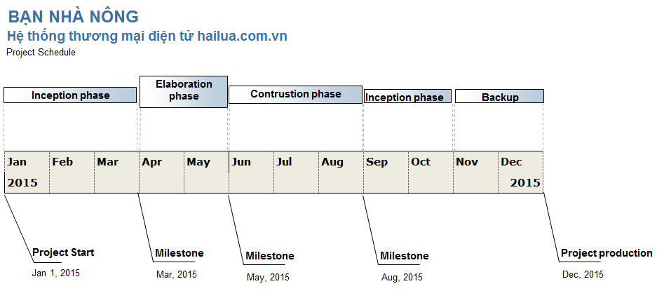

BÀI TẬP MÔN CÔNG NGHỆ PHẦN MỀM TIÊN TIẾN
PHÂN TÍCH PHÁT TRIỂN HỆ THỐNG THƯƠNG MẠI ĐIỆN TỬ HAILUA.COM.VN
Giảng viên: TS. Nguyễn Văn Vũ
Học viên: Võ Đoàn Như Khánh – CH1402031
CÂU 1: PHÂN TÍCH 3 MÔ HÌNH DỰ ÁN
- Rational Unified Process
- Waterfall Model
- Scrum
1.1 So sánh giữa Trandition method và Agile method:
Với 3 mô hình trên thuộc 2 nhóm Trandition method (RUP, Waterfall) và Agile method (Scrum). Theo phân tích đề bài thì dự án thương mại điện tử hailua.com.vn có những đặc điểm chính sau:
- Phải cung cấp tài liệu như đặc tả yêu cầu, phân tích, thiết kế. Khách hàng cũng yêu cầu cần có tài liệu về hướng dẫn sử dụng, huấn luyện, và bảo trì sản phẩm.
- Một số thành phần có độ chính xác cao và an toàn.
- Số lượng thành viên khoảng 20 thành viên.
- Thời gian thực hiện 1 năm.
- Yêu cầu ổn định. Tuy nhiên, tùy thuộc vào thị trường và công nghệ, có thể có những thay đổi có những thay đổi về chức năng và công nghệ.
Từ những đặc điểm trên, Trandition method sẽ phù hợp với dự án này hơn Agile method vì Agile method có những đặc tính không phù hợp sau:
- Chú trọng cao vào việc hiện thực sản phẩm hơn là các tài liệu đặc tả, phân tích thiết kế,v.v… việc này sẽ ảnh hưởng đến yêu cầu của khách hàng về tài liệu sau khi kết thúc sản phẩm.
- Số lượng thành viên khá lớn (khoảng 20 thành viên) nên việc phân chia, quản lý công việc của Project Manager dựa trên các buổi meeting hằng ngày (bắt buộc trong Agile method) sẽ rất khó khăn để nắm bắt tiến độ công việc.
- Agile method không có những tài liệu, quy định, đặc tả rõ ràng vì thế có thể một số thành phần yêu cầu độ chính xác và an toàn cao có thể xảy ra lỗi gây thiệt hại cho khách hàng.
- Thời gian phát triển sản phẩm là 1 năm và trong tương lại sẽ có những phát triển khác về hệ thống. Với Agile method thì sau khi phát triển dự án xong method này ít có các tài liệu chi tiết về hệ thống, nên việc có một nhóm nào khác tiếp nhận việc phát triển hệ thống sẽ gặp những khó khăn nhất định.
Từ những bất cập của phương thức Agile method đối với đặc tính của dự án thì việc chọn Trandition method là một phương án tốt nhất cho việc phát triển hệ thống hiện tại.
1.2 So sánh giữa RUP (Rational Unified Process) vs Waterfall:
Giữa 2 phương pháp này thì RUP sẽ phù hợp Waterfall Model vì Waterfall Model có những đặc tính bất lợi sau :
- Về chi phí và quy trình: Waterfall được mô tả như một thác nước. Giai đoạn trước hoàn thành thì giai đoạn sau mới được thực hiện. Tại mỗi một giai đoạn thì có một đội ngũ chuyên gia phân tích các tính huống rất cẩn trọng. Nếu phát triển theo mô hình này thì khi khách hàng có nhu cầu thay đổi thì rất khó trở lại các bước cũ vì tốn khá nhiều chi phí và thời gian.
- Waterfall quá dài và không có sự linh hoạt. Trong khi 1 nhóm đang phân tích 1 bước thì các nhóm khác hoàn toàn không thể tận dụng thời gian đó để đầy nhanh tiến độ cho dự án. Waterfall chỉ phù hợp cho những dự án có tính ổn định cao và khả năng chịu lỗi cực tốt tại các dự án y tế, quân sự ,v.v….
Sau quá trình phân tích và so sánh thì mô hình RUP là mô hình phù hợp nhất cho việc phát triển dự án thương mại điện tử hailua.com.vn vì:
- Mô hình đáp ứng được các yêu cầu về tài liệu, đặc tả yêu cầu, phân tích, thiết kế, có các tài liệu về hướng dẫn sử dụng, huấn luyện, và bảo trì sản phẩm sau khi hoàn thành sản phẩm.
- Có những tài liệu phân tích rõ ràng nên khả năng chịu lỗi của hệ thống tốt. Đáp ứng được các yêu cầu về độ chính xác và an toàn của một số thành phần quan trọng. Trong mô hình sẽ có các kế hoạch phát triển, liên kết hệ thống, kiểm tra lỗi và có kịch bản thử nghiệm cho sản phẩm.
- Có thể quản lý dự án với số lượng thành viên trên 20 người và hơn nữa nếu dự án được cấp thêm thành viên tham gia.
- Có khả năng linh hoạt giữa các quá trình phát triển của dự án. Nếu có thay đổi thì chi phí thay đổi cũng tương đối phù hợp có thể chấp nhận được. Các công việc của các nhóm có thể cùng làm song song với nhau.
- Về sau này hướng phát triển nếu có một nhóm nào khác chịu trách nhiệm nâng cấp thì cũng sẽ có những tài liệu để phát triển tiếp hệ thống sau này.
CÂU 2: KẾ HOẠCH DỰ KIẾN CHO DỰ ÁN
2.1 Các giai đoạn chính và mục tiêu từng giai đoạn
Dự án được phát triển theo mô hình Rational Unified Process về thời gian sẽ chia ra 4 giai đoạn chính:
- Inception phase
- Elaboration phase
- Constuction phase
- Transition phase
Cuối mỗi giai đoạn chúng ta sẽ có Milestone để thống kê lại những thành quả đã đạt được tại cuối giai đoạn và đưa ra những việc phải làm gì tại những giai đoạn tiếp theo.
Mục tiêu chính của từng giai đoạn

Hình 1: Kế hoạch dự kiến dự án
Inception phase:
Thời gian: 3 tháng.
Trong giai đoạn này, những thành viên trong dự án sẽ thảo luận với khách hàng để đưa ra các chức năng chính, mục tiêu phát triển của website. Từ quá trình phân tích sẽ đưa ra được những đặc tả sau:
- Các chức năng chính sơ bộ website.
- Hình thành mô hình use-case cho các chức năng chính của website.
- Phân tích các rủi ro của website.
- Được ra các kế hoạch sơ bộ hướng phát triển và từng giai đoạn trong dự án.
- Phân tích các website thương mại đã có trên thị trường và đưa ra gợi ý hướng phát triển cho khách hàng.
Elaboration phase
Thời gian: 2 tháng.
- Trong giai đoạn này sẽ phân tích sâu hơn vào dự án nhằm đưa ra toàn bộ mô hình use-case của website.
- Đưa ra các nền tảng phần mềm được sử dụng trong dự án.
- Loại bỏ các nguy cơ, rủi ro cao có thể ảnh hướng đến hệ thống.
- Xem lại và đưa ra các rủi ro mới của dự án nhằm giảm thiểu khả năng lỗi của toàn hệ thống.
- Xác định các chức năng cần thiết hoặc không cần thiết của hệ thống.
Contrustion phase
Thời gian: 3 tháng.
Trong giai đoạn này, tất cả các thành phần và tính năng của hệ thống sẽ được phát triển vào sản phẩm. Thực hiện phát triển và tối ưu hóa về hiệu suất làm việc hệ thống. Trong nữa cuối giai đoạn sẽ có quá trình kiểm thử sản phẩm nhằm phát hiện các lỗi và sữa chữa
- Sản phẩm sẽ được hình thành và sẽ chạy được trên nhiều Platforms khác nhau.
- Các tài liệu hướng dẫn cũng sẽ được tạo ra.
- Các mô tả chức năng trong phiên bản hiện tại.
Sau giai đoạn này, Project manager phải đánh giá và quyết định xem website đã sẵn sàng đi vào hoạt động chưa,đánh giá hiệu suất, các rủi ro có thể có và phát hành bản beta của website.
Transition phase
Thời gian: 2 tháng.
Giai đoạn này nhằm chỉnh sữa vào hoàn thiện sản phẩm để chuyển giao cho khách hàng. Sản phẩm hoàn chỉnh là sản phẩm đã được kiểm tra và sửa hết các lỗi trong quá trình kiểm thử.
Giai đoạn này cũng là giai đoạn tạo ra các tài liệu về đặc tả yêu cầu, phân tích, thiết kế, các tài liệu về hướng dẫn sử dụng, huấn luyện, và bảo trì hệ thống. Những chức năng và hướng dẫn của hệ thống website. Sau giai đoạn này toàn bộ các tài liệu trên sẽ được gửi cho khách hàng để làm tư liệu và train cho nhân viên.
Những yêu cầu trong giai đoạn này:
- Giao sản phẩm website thử nghiệm cho khách hàng để kiểm thử.
- Đào tạo người sử dụng (adminstrator) và người bảo trì hệ thống.
- Hỗ trợ chuyển giao sản phẩm sau khi khách hàng đã kiểm thử.
Cuối giai đoạn, sản phẩm chính thức sẽ được giao cho khách hàng cùng toàn bộ các tài liệu mà khách hàng yêu cầu về hệ thống và hướng dẫn các nhân viên về chức năng, bảo trì hệ thống.
Thời gian dự phòng của dự án: 2 tháng (dùng để xử lý các lỗi phát sinh trong hệ thống).
Các core process của RUP được sử dụng trong dự án này bao gồm:
- Requirements workflow
- Analysis & Design workflow
- Implementation workflow
- Test workflow
- Deployment workflow
- Project Mangement workflow
2.2 Phân chia công việc từng nhóm
Project Manager 1
- Lập kế hoạch, quản lý, kiểm tra, giám sát toàn bộ quá trình làm dự án.
- Quản lý các rủi ro có thể xảy ra.
- Thảo luận các yêu cầu của khách hàng và phân tích, trao đổi với các team trong dự án.
System Analyst 4
- Từ những nhu cầu của khách hàng phân tích đưa ra các Actors và thiết kế Use case Model cho toàn hệ thống.
- Đưa ra các mô hình hóa để mô tả hoạt động của hệ thống.
Designer 3
- Từ các Use case thiết kế các chức năng, giao diện tương tác vời người dùng, các chức năng quản trị hệ thống con cho adminstrator v.v… để phục vụ cho các giai đoạn developer lập trình.
Developer 6
- Dựa vào các gói giao diện mà Designer thiết kế để định nghĩa tổ chức code và hiện thực hóa toàn bộ các thiết kế.
Tester 4
- Kiểm thử hoạt động của các chức năng của hệ thống.
- Kiểm tra đủ các chức năng mà khách hàng đã yêu cầu.
- Trong từng giai đoạn sẽ thực hiện việc kiểm thử với những chức năng trong từng giai đoạn.
2.3 Các Key Practices trong dự án
SPTO - Software Project Tracking and Oversight
- So sánh các kết quả thực tế với kế hoạch đã đưa ra từ trước.
- Thực hiện các biện pháp khắc phục lỗi khi kết quả thực tế hoặc hiệu suất sản phẩm sai kế hoạch.
- Các thay đổi phải thông qua sự đồng ý của các nhóm và những cá nhân liên quan.
SQA - Software Quality Assurance
- Đảm bảo chất lượng phần mềm đúng kế hoạch đề ra.
- Tuân thù các nguyên tắc của dự án, phát triển trên các tiêu chuẩn, thủ tục và các yêu cầu đã được hoạch định từ đầu.
- Các hoạt động nhằm đảm bảo SQA sẽ được thông báo với các nhóm và các cá nhân liên quan.
- Những vấn đề không thể giải quyết trong phạm vi dự án sẽ được giải quyết bởi người quản lý cao hơn.
RM - Requirements Management
- Các yêu cầu phần mềm được kiểm soát để đưa ra một số tiêu chuẩn nhất định cho việc phát triển phần mềm và quản lý dự án.
Kế hoạch, sản phầm và các hoạt động trong dự án phải nhất quán và bám sát theo yêu cầu dự án.
SPP - Software Project Planning
- Ước lượng các tài liệu cần thiết cho dự án và việc theo dõi dự án.
- Các hoạt động của dự án sẽ được lên kết hoạch và có tài liệu rõ ràng.
- Nhóm và cá nhân liên quan phải đồng ý và cam kết có trách nhiệm với dự án.
IC - Intergroupb Coordination
- Tất cả các nhóm phải đồng ý và thồng nhất thực hiện các yêu cầu của khách hàng.
- Các nhóm phải có những cam kết với nhau trong quá trình phát triển dự án
- Các nhóm phải giám sát, xác định và giải quyết các vấn đề của nhóm khác
PR - Peer Reviews
- Xem xét lại các hoạt động có trong kế hoạch
- Xác định và loại bỏ các khuyết điểm trong quá trình phát triển dự án
2.4 Những rủi ro của dự án có thể xảy ra
Trễ thời gian dự kiến của kế hoạch.
Trung bình
Project Manager luôn giám sát, kiểm tra tiến độ đều đặn. Giải quyết những khó khăn một cách nhanh chóng.
Vấn đề thay đổi công nghệ, chức năng của hệ thống.
Trung bình
Từ giai đoạn đầu phải có những thành viên có kinh nghiệm định hướng phát triển cho khách hàng biết những tính năng có thể phát triển trong tương lai.
Quản lý dự án phải có tầm nhìn xa để hướng website không trở lên lạc hậu về công nghệ tại thời điểm giao website cho khách hàng.
Những vấn đề liên quan đến kỹ thuật: Ảnh hưởng đến hiệu suất, khả năng đáp ứng/ chịu tải của hệ thống.
Khá nghiêm trọng
Cần các thành viên có kinh nghiệm trong việc phát triển hệ thốgn website, cũng như các thành viên có kinh nghiệm tối ưu hoá code sao cho hệ thống luôn đáp ứng một lượng user đồng thời cao nhất.
Vấn đề về phần thanh toán của hệ thống, có thể ảnh hướng đến tiền bạc của khách hàng.
Khá nghiêm trọng
Trước khi giao sản phẩm cho khách hàng phải kiểm tra thật kỹ toàn bộ hệ thống nhất là phần thanh toán trực tuyến của website.
Nếu có điều kiện thực hiện giao dịch thật để kiểm tra hệ thống.
Website thảo luận trực tuyến
Reference:
- Pankaj Jalote (Editor) , 2002, Software Project Management in Practice book, 269 pp.
- IBM Company, 1998, Rational Unified Process - Best Practices for SoftwareDevelopment Teams. https://www.ibm.com/developerworks/rational/library/......., truy cập ngày 30/01/2015.